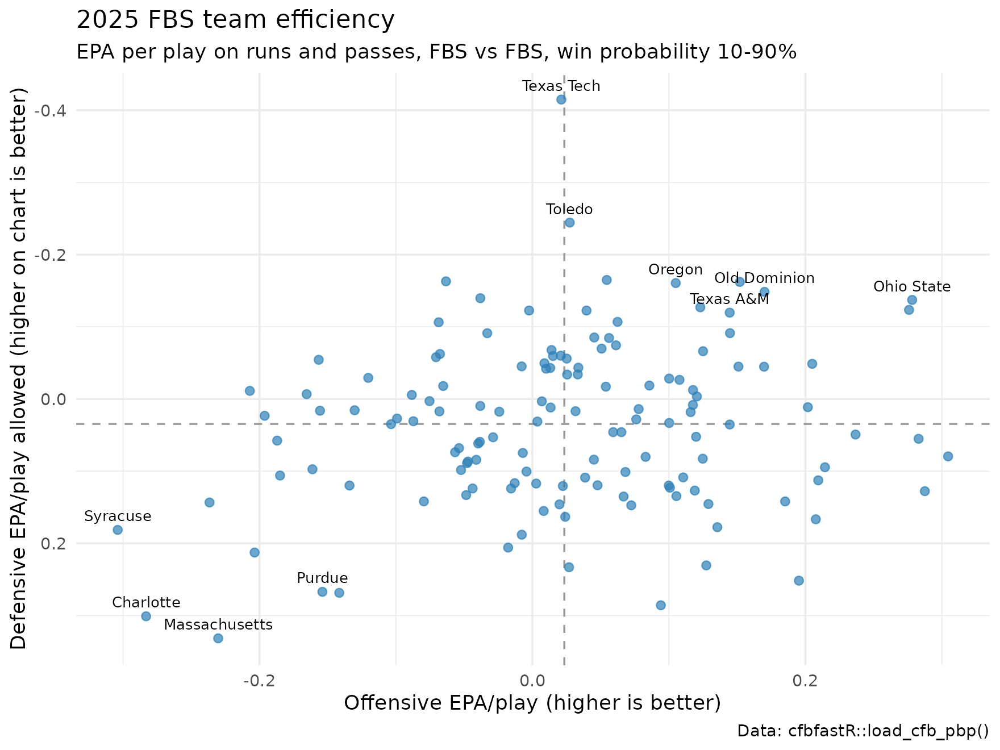

Getting Started with cfbfastR: College Football Analytics in R
Saiem Gilani,
Akshay Easwaran, Jared Lee


Source: vignettes/intro.Rmd
intro.RmdcfbfastR is an R package that gives you college
football play-by-play data with expected points added (EPA) and win
probability already computed on every play, plus clients for the
CollegeFootballData.com (CFBD) and ESPN APIs. You can go from a
fresh R install to a chart comparing every FBS offense and defense in
about twenty lines of code, without an API key. This page walks through
exactly that, then explains the columns, the vocabulary, and where to go
next.
If you have never written R before, that is fine. Read top to bottom and run each code block in order.
What you’ll learn
- How to install R, RStudio and
cfbfastR - Where
cfbfastRgets its data, and how a function’s name tells you its source - How to get and register a free CollegeFootballData.com API key
- How to load a full season of play-by-play with
load_cfb_pbp() - How to compute EPA per play and success rate for every offense and defense
- How to make your first
ggplot2chart of team efficiency - What the core play-by-play columns mean, and the vocabulary analysts use (EP, EPA, WP, WPA, success rate, havoc, garbage time, and more)
Step 1: Install R and RStudio
R is the language; RStudio is the editor most people use to write it. Both are free.
- Download R from https://cran.r-project.org, choosing your operating system (Windows, macOS or Linux), and install the latest release.
- Download RStudio Desktop from posit.co and install it.
- Windows only: install Rtools that matches your R version. It is not an R package; it is the toolchain R uses to build packages from source, which you need for development versions from GitHub.
- Keep the RStudio IDE cheatsheet open while you learn the layout.
Step 2: Install cfbfastR
| Source | Command | When to use it |
|---|---|---|
| CRAN | install.packages("cfbfastR") |
the stable release; start here |
GitHub (with pak) |
pak::pak("sportsdataverse/cfbfastR") |
the development version, with the newest functions and fixes |
GitHub (with remotes) |
remotes::install_github("sportsdataverse/cfbfastR") |
same as above, if you already use remotes
|
install.packages("cfbfastR")
# or the development version:
if (!requireNamespace("pak", quietly = TRUE)) install.packages("pak")
pak::pak("sportsdataverse/cfbfastR")
# the examples on this page also use dplyr and ggplot2
install.packages(c("dplyr", "ggplot2"))Then load the packages at the top of every script:
# Do not add an install step for cfbfastR here. pkgdown and R CMD check
# render this article against the package being built; installing the
# CRAN release would overwrite that dev build, and any function added
# since the last release would vanish mid-render.
library(cfbfastR)
library(dplyr)
library(ggplot2)Step 3: Know where the data comes from
cfbfastR reads from a few distinct sources, and
the prefix of every function name tells you which one —
and therefore whether you need an API key.
| Prefix | Source | API key? | What you get |
|---|---|---|---|
load_cfb_*() |
pre-built season files on the SportsDataverse GitHub releases | no | play-by-play with EPA/WPA, schedules, rosters, teams, ratings, recruiting |
load_espn_cfb_*() |
pre-built ESPN season files on GitHub releases | no | ESPN play-by-play, box scores, drives and advanced stats |
load_ncaa_mfb_*() |
pre-built stats.ncaa.org season files on GitHub releases | no | play-by-play, box scores and rosters including FCS and lower divisions |
cfbd_*() |
the CollegeFootballData.com API | yes (free) | games, drives, plays, stats, ratings (SP+, SRS, Elo, FPI), recruiting, betting lines, draft |
espn_cfb_*(), espn_*()
|
ESPN’s public APIs, live | no | scoreboards, game summaries, live play-by-play, rankings, FPI |
fox_cfb_*(), yahoo_cfb_*()
|
Fox Sports and Yahoo Sports APIs, live | no | box scores, standings, odds, season stats |
calculate_*() |
the models shipped with cfbfastR
|
no | score your own plays with the EP, WP, fourth-down and related models |
update_cfb_db() |
GitHub releases, written to a local database | no | a SQLite (or other DBI) copy of every season of play-by-play |
As a rule of thumb: reach for a load_*()
function first. It downloads a whole season in one request, is
fast, and needs no key. Use cfbd_*() when you need
something the release files do not carry, and the live
espn_cfb_*() functions for games in progress.
How many functions sit in each family, counted from the installed package:
exports <- getNamespaceExports("cfbfastR")
families <- c("load_cfb_", "load_espn_cfb_", "load_ncaa_mfb_", "cfbd_",
"espn_", "fox_cfb_", "yahoo_cfb_", "calculate_")
data.frame(
prefix = paste0(families, "*()"),
functions = vapply(families, function(p) sum(startsWith(exports, p)), integer(1)),
row.names = NULL
) |>
knitr::kable()| prefix | functions |
|---|---|
| load_cfb_*() | 21 |
| load_espn_cfb_*() | 27 |
| load_ncaa_mfb_*() | 10 |
| cfbd_*() | 97 |
| espn_*() | 75 |
| fox_cfb_*() | 8 |
| yahoo_cfb_*() | 6 |
| calculate_*() | 10 |
Step 4: Get a free CollegeFootballData.com API key
You do not need a key for the worked example below —
it uses load_cfb_pbp(). You do need one for any
cfbd_*() function.
- Go to https://collegefootballdata.com/key and enter your e-mail address. The free tier is enough for everything on this site.
- The key arrives by e-mail. Copy it.
- Tell R about it. For the current session only:
Sys.setenv(CFBD_API_KEY = "YOUR-API-KEY-HERE")To save it for every session, add it to your .Renviron
file. The easiest way to open that file is
usethis::edit_r_environ(). Add this line (no quotes), save,
then restart R (Session → Restart R, or
Ctrl + Shift + F10):
CFBD_API_KEY=YOUR-API-KEY-HERE- Check that it worked:
cfbfastR::has_cfbd_key() # TRUE if CFBD_API_KEY is set
cfbfastR::cfbd_api_key_info() # your Patreon tier and remaining callsNever paste your key into a script you share or commit to GitHub —
keep it in .Renviron. The API key help page has the
full details.
With a key registered, every cfbd_*() function works.
For example:
# needs a CFBD API key -- not run when this page is built
cfbd_game_info(year = 2025, team = "Texas")
cfbd_ratings_sp(year = 2025)Step 5: Load a season of play-by-play
Now the fun part. One call downloads every play of a season, already
scored by the expected points and win probability models. We use
2025, the most recent complete season; change the
number to load any season from 2014 on, or pass a range such as
2021:2025.
season <- 2025
pbp <- load_cfb_pbp(season)That is 293,200 rows (one per play) and 362 columns across 1,657 games. The most useful columns sit on the left. Here are a few plays:
pbp |>
dplyr::filter(!is.na(EPA)) |>
dplyr::select(pos_team, def_pos_team, period, down, distance,
yards_to_goal, play_type, yards_gained,
EPA, wp_before, wpa, success) |>
dplyr::slice_head(n = 8) |>
knitr::kable(digits = 3)| pos_team | def_pos_team | period | down | distance | yards_to_goal | play_type | yards_gained | EPA | wp_before | wpa | success |
|---|---|---|---|---|---|---|---|---|---|---|---|
| Alabama | Florida State | 1 | 1 | 10 | 65 | Kickoff | 0 | 0.004 | 0.490 | 0.002 | 0 |
| Alabama | Florida State | 1 | 1 | 10 | 75 | Rush | 6 | 0.351 | 0.493 | 0.024 | 1 |
| Alabama | Florida State | 1 | 2 | 4 | 69 | Pass Reception | 12 | 1.249 | 0.516 | 0.059 | 1 |
| Alabama | Florida State | 1 | 1 | 10 | 57 | Rush | 3 | -0.342 | 0.575 | -0.007 | 0 |
| Alabama | Florida State | 1 | 2 | 7 | 54 | Rush | 5 | 0.235 | 0.569 | 0.017 | 1 |
| Alabama | Florida State | 1 | 3 | 2 | 49 | Penalty | -5 | -1.575 | 0.585 | -0.048 | 0 |
| Alabama | Florida State | 1 | 3 | 7 | 54 | Rush | 6 | -0.387 | 0.537 | -0.014 | 0 |
| Alabama | Florida State | 1 | 4 | 1 | 48 | Rush | 1 | 2.596 | 0.524 | 0.098 | 1 |
Step 6: Compute EPA per play and success rate
Three filters turn raw play-by-play into a fair team comparison:
-
Keep only real offensive snaps — runs and passes
(
rush == 1 | pass == 1), dropping kickoffs, punts, penalties and timeouts. -
Keep only FBS-vs-FBS games. The season file also
contains games involving FCS teams; the
home_team_divisionandaway_team_divisioncolumns let you filter them. -
Drop garbage time. Plays in blowouts tell you
little about how good a team is. There is no single standard definition
and no
garbage_timecolumn in this data; here we keep plays where the offense’s win probability before the snap (wp_before) is between 10% and 90%.
plays <- pbp |>
dplyr::filter(
home_team_division == "fbs", away_team_division == "fbs",
rush == 1 | pass == 1,
!is.na(EPA),
wp_before >= 0.10, wp_before <= 0.90
)Now summarise by offense and by defense. EPA is always from the offense’s point of view, so a defense’s EPA/play allowed is better when it is lower.
offense <- plays |>
dplyr::group_by(team = pos_team) |>
dplyr::summarise(
off_plays = dplyr::n(),
off_epa = mean(EPA),
off_success = mean(success),
.groups = "drop"
)
defense <- plays |>
dplyr::group_by(team = def_pos_team) |>
dplyr::summarise(
def_plays = dplyr::n(),
def_epa = mean(EPA),
def_success = mean(success),
.groups = "drop"
)
teams <- offense |>
dplyr::inner_join(defense, by = "team") |>
dplyr::filter(off_plays >= 200, def_plays >= 200) |>
dplyr::mutate(net_epa = off_epa - def_epa) |>
dplyr::arrange(dplyr::desc(net_epa))
teams |>
dplyr::select(team, off_epa, off_success, def_epa, def_success, net_epa) |>
dplyr::slice_head(n = 10) |>
knitr::kable(digits = 3, col.names = c("Team", "Off EPA/play", "Off success",
"Def EPA/play", "Def success", "Net EPA/play"))| Team | Off EPA/play | Off success | Def EPA/play | Def success | Net EPA/play |
|---|---|---|---|---|---|
| Texas Tech | 0.021 | 0.370 | -0.415 | 0.315 | 0.436 |
| Ohio State | 0.278 | 0.512 | -0.137 | 0.384 | 0.415 |
| Notre Dame | 0.276 | 0.493 | -0.123 | 0.376 | 0.399 |
| Old Dominion | 0.170 | 0.478 | -0.148 | 0.391 | 0.318 |
| Indiana | 0.152 | 0.471 | -0.162 | 0.361 | 0.314 |
| Toledo | 0.027 | 0.397 | -0.244 | 0.338 | 0.272 |
| Oregon | 0.105 | 0.453 | -0.161 | 0.351 | 0.266 |
| Texas A&M | 0.145 | 0.467 | -0.120 | 0.350 | 0.264 |
| Utah | 0.205 | 0.463 | -0.049 | 0.401 | 0.254 |
| Miami | 0.123 | 0.459 | -0.127 | 0.374 | 0.250 |
Across these 136 FBS teams, the average non-garbage-time snap was
worth +0.031 EPA, and 42.4% of snaps were successful. Texas Tech had the
best net EPA per play in 2025. The 200-play minimum is
there because per-play averages over small samples are noisy.
These are raw numbers. They are not adjusted for opponent strength, so a team with a soft schedule looks better than it is. Opponent adjustment is what ratings such as SP+ do; see Part IV of the expected points series for how much that matters.
Step 7: Your first plot
The classic team-efficiency chart puts offense on one axis and defense on the other. We flip the defensive axis so that up and to the right is good on both sides of the ball.
label_teams <- dplyr::bind_rows(
dplyr::slice_head(teams, n = 8),
dplyr::slice_tail(teams, n = 4)
)
ggplot(teams, aes(x = off_epa, y = def_epa)) +
geom_hline(yintercept = mean(teams$def_epa), linetype = "dashed", colour = "grey60") +
geom_vline(xintercept = mean(teams$off_epa), linetype = "dashed", colour = "grey60") +
geom_point(colour = "#2c7fb8", alpha = 0.7, size = 2) +
geom_text(data = label_teams, aes(label = team),
size = 3, vjust = -0.8, check_overlap = TRUE) +
scale_y_reverse() +
labs(
title = paste(season, "FBS team efficiency"),
subtitle = "EPA per play on runs and passes, FBS vs FBS, win probability 10-90%",
x = "Offensive EPA/play (higher is better)",
y = "Defensive EPA/play allowed (higher on chart is better)",
caption = "Data: cfbfastR::load_cfb_pbp()"
) +
theme_minimal(base_size = 12)
Want team logos instead of dots? The optional cfbplotR
package adds geom_cfb_logos() (not run when this page is
built, because the logos are downloaded from external image hosts):
if (requireNamespace("cfbplotR", quietly = TRUE)) {
ggplot(teams, aes(x = off_epa, y = def_epa)) +
geom_hline(yintercept = mean(teams$def_epa), linetype = "dashed", colour = "grey60") +
geom_vline(xintercept = mean(teams$off_epa), linetype = "dashed", colour = "grey60") +
cfbplotR::geom_cfb_logos(aes(team = team), width = 0.035) +
scale_y_reverse() +
labs(title = paste(season, "FBS team efficiency"),
x = "Offensive EPA/play", y = "Defensive EPA/play allowed",
caption = "Data: cfbfastR::load_cfb_pbp()") +
theme_minimal(base_size = 12)
}The core play-by-play columns
The season file has many columns; these are the ones you will use
constantly. Every name below is the exact column name in
load_cfb_pbp() output.
Identifiers
| Column | Meaning |
|---|---|
game_id |
unique ID for the game; join key to schedules |
drive_id |
unique ID for the drive within the game |
id_play |
unique ID for the play |
season, week
|
season year and week number |
pos_team, def_pos_team
|
the offense (team with the ball) and the defense |
home_team_division,
away_team_division
|
"fbs", "fcs", … — use to restrict to
FBS |
Game situation
| Column | Meaning |
|---|---|
period |
quarter (5+ is overtime) |
down, distance
|
down and yards needed for a first down |
yards_to_goal |
yards from the line of scrimmage to the opponent’s end zone (75 = your own 25) |
play_type, play_text
|
play category ("Rush", "Pass Reception",
"Sack", …) and the raw description |
yards_gained |
yards gained on the play |
rush, pass
|
1 if the play was a run / a pass attempt or sack |
Model outputs
| Column | Meaning |
|---|---|
ep_before, ep_after
|
expected points before and after the play |
EPA |
expected points added: ep_after - ep_before, offense’s
view |
def_EPA |
the same number with the sign flipped, defense’s view |
wp_before, wp_after
|
the offense’s win probability before and after the play |
wpa |
win probability added: wp_after - wp_before
|
success |
1 if the play gained 50% of the needed yards on 1st down, 70% on 2nd, 100% on 3rd or 4th; turnovers are never successful |
epa_success |
1 if EPA > 0 — an alternative definition of
success |
Handy flags
| Column | Meaning |
|---|---|
rz_play |
1 if the snap was inside the opponent’s 20
(yards_to_goal <= 20) |
scoring_opp |
1 if inside the opponent’s 40
(yards_to_goal <= 40) |
stuffed_run |
1 if a run gained zero or negative yards |
middle_8 |
TRUE in the last four minutes of the first half and the
first four of the second |
Garbage time
There is no garbage_time column in
load_cfb_pbp() output, so you choose the rule. Two common
options:
-
Win-probability window (used above): keep
wp_beforebetween 0.10 and 0.90. Simple and symmetric, and it adapts to the clock automatically. - Score and quarter: drop plays where the score margin passes a threshold that tightens as the game goes on (a larger margin counts as garbage time in the second quarter than in the fourth). Versions of this rule, popularised by Bill Connelly, differ in their exact thresholds, so state the ones you use.
Several cfbd_*() functions, such as cfbd_stats_season_advanced()
and cfbd_metrics_ppa_teams(),
take an excl_garbage_time argument that applies CFBD’s own
definition server-side.
Glossary
| Term | Definition |
|---|---|
| EP (expected points) | The net points the offense can expect from the current down, distance, field position, time and score before the next score of the half. Negative deep in your own territory, around +4 inside the opponent’s 20. See Part I. |
| EPA (expected points added) | The change in EP across one play. The single best per-play measure of offensive value. See Part IV. |
| EPA/play | Mean EPA over a set of plays: efficiency. Total EPA is the sum: volume. |
| PPA (predicted points added) | CollegeFootballData.com’s name for its own EPA-style metric (the
cfbd_metrics_ppa_*() functions). Built from a different
model, so values will not match cfbfastR EPA exactly. |
| WP (win probability) | The probability the offense wins the game from the current state. See Part V. |
| WPA (win probability added) | The change in WP across one play. Rewards plays that matter in close, late situations; EPA does not care about the scoreboard as much. |
| Success rate | Share of plays that are successful by the 50% / 70% / 100% rule above. Measures consistency. |
| Explosiveness | How big the successful plays are. CFBD defines it as average PPA on successful plays; others use the share of 20+ yard gains. |
| Havoc rate | Share of a defense’s snaps with a tackle for loss, forced fumble,
interception or pass breakup. Available from
cfbd_stats_season_advanced() and
cfbd_game_box_advanced(). |
| Garbage time | Plays where the outcome is effectively decided; usually excluded from efficiency stats. |
yards_to_goal |
Distance to the opponent’s end zone. 75 means your own 25; 1 means the opponent’s 1. |
| Drive | A sequence of plays by one team from when it gains possession until it scores, punts, turns the ball over or the half ends. |
| Red zone | Inside the opponent’s 20 (rz_play == 1). |
| Scoring opportunity | A drive that reaches the opponent’s 40
(scoring_opp == 1). |
| Middle 8 | The last four minutes of the first half plus the first four of the second, when possessions can swing the game. |
| CPOE | Completion percentage over expected, from the completion probability model. See Part VI. |
| SP+ | Bill Connelly’s opponent-adjusted efficiency rating, via
cfbd_ratings_sp(). |
| SRS, Elo, FPI | Other team ratings: simple rating system (margin adjusted for
schedule), Elo (game-by-game rating updates) and ESPN’s Football Power
Index. See the ratings
functions and espn_ratings_fpi(). |
Find any function: the reference index
Every exported function has its own page. The reference index is grouped by source:
| Section | What is in it |
|---|---|
| Function family overviews | one-page summaries of the cfbd_* and
espn_cfb_* families |
| cfbfastR Data | the load_*() season loaders, update_cfb_db()
and cfbd_pbp_data()
|
| Full Season Loaders |
load_cfb_pbp(),
load_cfb_schedules(),
load_cfb_rosters(),
load_espn_cfb_pbp(),
load_ncaa_mfb_pbp()
and more |
| College Football Data API | every cfbd_*() function, starting with the API key helpers
|
| Model Calculators |
calculate_epa(),
calculate_win_probability() and the other model scorers (details) |
| Rankings and Ratings Data | SP+, SRS, Elo, FPI and poll rankings |
| ESPN Data | live ESPN scoreboards, game summaries, play-by-play (espn_cfb_pbp()),
teams, players and ratings |
| Fox Sports Data |
fox_cfb_*() box scores, odds, standings and
leaders |
| Yahoo Sports Data |
yahoo_cfb_*() season stats and scoreboards |
| Helper Functions and Data | included data and play-by-play model helpers |
All articles
The Expected Points Model series — read these in order once you are comfortable with the example above.
| Article | What it covers |
|---|---|
| Part I: How the Model Works | what expected points means and the seven next-score outcomes the model predicts |
| Part II: How the Model Is Built | why EP is a multiclass problem and how the model moved to eight gradient-boosted features |
| Part III: A History of Expected Points | from Virgil Carter’s 1970 paper to nflscrapR and
cfbfastR
|
| Part IV: What Is EPA? | how EPA is calculated, what a good EPA/play looks like, sign conventions |
| Part V: Win Probability |
wp, wpa and the spread-aware
vegas_wp
|
| Part VI: The Derived Models | CPOE, expected pass rate, field goals, two-point tries, fourth downs and QBR |
Cookbooks and tutorials
| Article | What it covers |
|---|---|
| ESPN College Football Cookbook | recipes for the espn_cfb_*() family: teams, games,
play-by-play, EPA/WPA and ratings |
| CFB Data Games Examples | box scores, advanced box scores, game info, media and records |
| CFB Data Plays Examples | pulling a season of plays week by week with
cfbd_plays()
|
| CFB Data Stats Examples | team and player stats, settling the 2019 LSU vs 2013 Florida State debate |
| CFB Data Teams Examples | rosters, team talent and head-to-head matchup history |
| CFB Data Recruiting Examples | 247Sports composite player, team and position rankings |
| CFB Data Betting Lines Examples | game betting lines with cfbd_betting_lines()
|
| Animated Win Probability Charts | adapting Lee Sharpe’s animated WP charts to college football |
| Fourth Down Tendency Plots | charting coaches’ fourth-down decisions |
| Rolling EPA Graph | a rolling-average EPA chart across a season |
| Visualizing Recruiting Geography | mapping where blue-chip recruits come from |
| Team Talent from Recruiting Rankings | approximating each school’s recruited talent with
ggplot2
|
| Simulating a Season with cfbseedR | rebuilding conference standings and the playoff field, then simulating the rest of a season |
| PBP Pull Comparison | play-by-play pulls compared across cfbfastR and the
archived cfbscrapR
|
Where to go next
- Go deeper on the metrics. Read Part IV (EPA) and Part V (win probability).
-
Split the example. Add
passorrushto thegroup_by()to get passing and rushing EPA separately, or group byweekto see how a team changed over the season. -
Go player-level.
passer_player_name,rusher_player_nameandreceiver_player_namelet you compute EPA per dropback or per carry. -
Join more data.
load_cfb_schedules(),load_cfb_rosters()andload_cfb_teams()join to play-by-play ongame_idand team names. -
Store every season locally.
update_cfb_db()builds a database of all play-by-play since 2014 so you only download new games. - Get help. Browse the reference index, file issues on GitHub, and share your work tagged @cfbfastR.
Citation
To cite the cfbfastR
R package in publications, use citation("cfbfastR"),
or:
BibTeX Citation
Related SportsDataverse packages
- cfbfastR - college football
- hoopR - men’s basketball
- wehoop - women’s basketball
- baseballr - baseball
- fastRhockey - hockey
- oddsapiR - betting odds
- cfbseedR - college football season and playoff simulation (CRAN)
- cfb4th - college football fourth-down decisions (r-universe)
- sdvplotR - team logos, colours and tables for every SportsDataverse league (r-universe)
- sportyR - playing surfaces, including the college football field (CRAN)
- cfbplotR - college football logos and colours (r-universe)
- sportsdataverse-py - the Python package
- sportsdataverse-R - the R meta-package